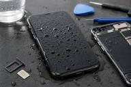

iPad Repair
iPad Repair
iPad Battery Replacement in Newton Mearns
Is your iPad battery draining fast, not charging properly, or shutting down unexpectedly? Don't worry! Mearns Gadget Repair provides fast, affordable replacement.

Welcome to the Mearns Gadget Repair blog. Explore expert tips, troubleshooting advice, and tech guides directly from our Newton Mearns repair workbench. Learn how to keep your devices running smoothly!

Expert Tech Advice
iPad Repair
Is your iPad battery draining fast, not charging properly, or shutting down unexpectedly? Don't worry! Mearns Gadget Repair provides fast, affordable replacement.

Water DamageFell your iPhone in water? Accidentally spilled tea, juice, or coffee on it? You are not the only one. Ultrasonic board cleaning saves your logic board.
 iPhone Repair
iPhone Repair
iPhone back glass replacement: iPhone back glass is more than an eyesore—it's a safety risk, an indication of greater damage.
 Port Fix
Port Fix
iPhone Charging Port Repair — linking you to work, family, and the world. But when lint or damage blocks power, we fix it fast.
 Screen Repair
Screen Repair
iPhone Screen Repair isn't frustrating when handled by Newton Mearns experts. Same-day turnaround and crystal-clear display restoration.
 Samsung
Samsung
Samsung phone screen can turn your day around. One misplaced drop and you lose touch. We replace genuine AMOLED displays with warranty.
 Smart Watch
Smart Watch
Why Smartwatches Matter: Smartwatches are more than just timepieces—they track fitness and health. Screen and battery fixes in Newton Mearns.
 Thermal Fix
Thermal Fix
Is your iPhone heating up, draining battery quickly, or shutting down unexpectedly? Mearns Gadget Repair offers expert thermal diagnostics.
 Biometrics
Biometrics
Samsung phones boast of superior features, slender build, and state-of-the-art security, particularly fingerprint sensor technology.